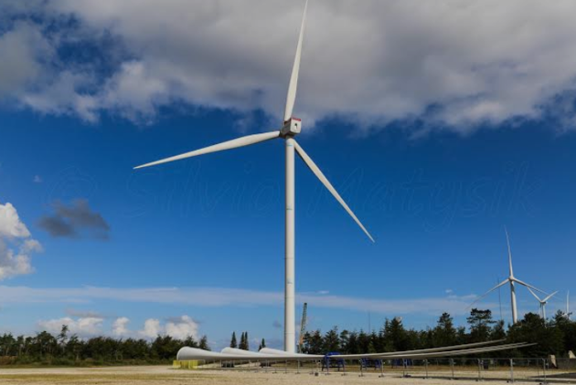
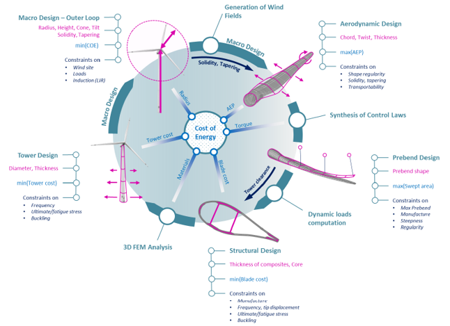

Aeroelastic Design · Cp-Lambda · BEM · Politecnico di Milano · A.A. 2024–2025
Multidisciplinary aero-servo-elastic design of an onshore wind turbine, integrating aerodynamics, structures, and control within an iterative Cost of Energy minimisation loop.
Overview
A 2.3 MW IEC Class IA wind turbine — targeting sites with a mean wind speed of 10 m/s and turbulence intensity of ~0.16 at 15 m/s — was designed from a market-survey baseline with a single objective: minimise the Cost of Energy (CoE).
The CoE formulation ties together annual energy production, capital cost, and operating expenses into a single economic metric. Every design choice — from blade chord to spar cap thickness — was evaluated against its effect on this number.
Starting from a 93 m reference rotor, an iterative multidisciplinary loop explored chord variations, structural lightweighting, and rotor scaling. The final configuration — a 97.66 m diameter rotor with +5% chord — achieved the lowest CoE among all tested designs while satisfying all aeroelastic and structural constraints.
Final design — D = 97.66 m, 2.3 MW, IEC Class IA
Rated power
2.3 MW
IEC Class
Class IA — 10 m/s mean wind
Rotor diameter
97.66 m (final)
Hub height
80 m
Aeroelastic solver
Cp-Lambda (BEM-based)
Structural analysis
BECAS · RotorCS
Wind input
TurbSim — IEC 61400 DLCs
Control strategy
PID pitch + Hermite LUT torque
Annual energy production
12.0 GWh/yr
Cost of Energy
35.07 $/MWh
Blade mass
6 705 kg
Design environment
POLI-Wind lab — PoliMi
Methodology
The design process integrated aerodynamics, structures, and control in a single MATLAB-based environment. At each iteration, modifications were introduced whenever a constraint was violated, and the CoE was recomputed to guide the next step.
The diagram shows the full multidisciplinary design loop: from rotor geometry and wind field generation, through aerodynamic, structural, and control synthesis, to dynamic load computation and cost evaluation — all centred on the Cost of Energy as the single governing objective.

Cp-Lambda design framework — POLI-Wind lab, Politecnico di Milano
Market survey & baseline selection
Survey of commercial 2–2.5 MW turbines identified the Siemens SWT-2.3-93 as the reference. A 93 m rotor configuration was adopted as the starting point, with hub, tower, and geometric parameters consistent with academic baselines.
Control system design & LUT sensitivity
A PID pitch controller with gain scheduling was tuned to handle the Region 2.5 transition imposed by the 74 m/s tip-speed limit. Three torque ramp profiles were compared — linear, piecewise-linear, and Hermite polynomial. The Hermite ramp delivered the best AEP and was adopted for all subsequent iterations.
Structural lightweighting
With the baseline control locked, the blade structural layup was progressively lightened until the flap-wise frequency and tip displacement constraints became active. This yielded the lightest feasible 93 m design.
Chord sensitivity study (±5%)
Blade chord was varied by ±5% at fixed radius, with structural updates at each step to maintain compliance. The +5% chord configuration produced the highest power coefficient and lowest CoE among the 93 m variants, despite slightly higher loads.
PID vs LQR control comparison
A Linear Quadratic Regulator (LQR) was implemented on the best-chord configuration. Despite marginal power improvement, the LQR proved too aggressive, causing the blade tip displacement constraint to be violated even after stiffness increases. PID was retained.
Rotor radius scaling (±5%) → final design
The +5% chord distribution was scaled to D = 88.4 m and D = 97.66 m. The larger rotor increased swept area and AEP, more than compensating for the structural cost increase. The 97.66 m configuration achieved the lowest CoE of all tested designs and was selected as the final solution.
Spar caps (PS/SS)
Rebalanced
Pressure side (tension-dominated): thickness reduced. Suction side (compression-dominated): thickness increased to raise flap-wise stiffness and meet frequency constraints.
LE/TE reinforcements
−45–50% laminate
Width reduced by 3%, laminate thickness cut by ~45–50%. Lowers edge-wise stiffness to satisfy frequency separation while saving mass.
Shell & shear webs
Mid/outer span thinned
Substantial material removal where loads are lower. Spanwise taper preserved: higher thickness inboard, reducing toward the tip following chord reduction.
Stress margins
−49% / −34%
Critical section at η ≈ 0.52 span fraction. Tensile margin: −49% vs allowable. Compressive margin: −34% vs allowable. Both well within limits.
Structural design
The structural layout was redesigned to satisfy two competing frequency constraints simultaneously: the first flap-wise frequency must stay above 1.2× the 3P excitation, while the edge-wise frequency must exceed 1.15× the flap-wise value.
The approach decoupled pressure-side and suction-side spar caps, exploiting the asymmetric stress allowables to save mass on the tension side while strengthening the compression side. LE/TE reinforcements were thinned to selectively reduce edge-wise stiffness without affecting the adhesive joint geometry.
The resulting blade mass — 6 705 kg — is lower than the baseline despite the larger rotor, with all constraints satisfied and comfortable stress margins.
Results
The CoE evolution across all eight configurations tells a clear story: control optimisation brought a first step down from the initial baseline; structural lightweighting and chord increase added further increments; the radius increase to 97.66 m produced the decisive final reduction.
The final design achieves an AEP of 12.0 GWh/yr and a CoE of 35.07 $/MWh — a meaningful reduction from the 35.71 $/MWh baseline — while fully satisfying the flap-wise separation constraint (margin +1.51%), the tip displacement constraint (margin −2.5%), and leaving comfortable edge-wise and stress margins.
Flap-wise frequency separation
Satisfied ✓ — margin +1.51%
First rotating flap-wise frequency: 0.8552 Hz. Required clearance from 3P excitation: ≥1.2×. Within the ±2% tolerance band specified in the design requirements.
Edge-wise frequency separation
Satisfied ✓ — margin −20.3%
First rotating edge-wise frequency: 1.1835 Hz. Required clearance from flap-wise: ≥1.15×. Constraint comfortably exceeded, confirming structural robustness.
Blade tip displacement
Satisfied ✓ — margin −2.5%
Maximum tip deflection across all DLCs: 5.963 m. Allowable limit: 70% of unloaded blade–tower clearance (8.74 m). Constraint met within the tolerance band.
Maximum tip speed
Satisfied ✓ — 74 m/s limit
Rated rotor speed constrained to 14.47 rpm by the noise/structural tip-speed limit. The Region 2.5 control strategy was specifically designed to handle this constraint smoothly.
Takeaway
The most instructive outcome of this project was not the final number, but the interaction between domains. A chord increase that improves aerodynamic efficiency also raises loads and shifts natural frequencies — requiring structural updates that partially negate the mass savings. A larger rotor increases AEP but also capital cost. None of these effects can be evaluated in isolation.
The PID vs LQR comparison was particularly revealing: a mathematically superior controller failed the design because it pushed structural loads beyond the admissible envelope. Optimality is always constrained.
The CoE framework proved its value as a single integrating metric that naturally penalises both under-performance and over-engineering — making it the right objective function for a real design problem.
Baseline CoE
35.71 $/MWh
D = 93 m — starting point
Final CoE
35.07 $/MWh
D = 97.66 m — final design
Configurations tested
8
Control · chord · radius
Design DLCs
5
NTM · EOG · EWS · EWM